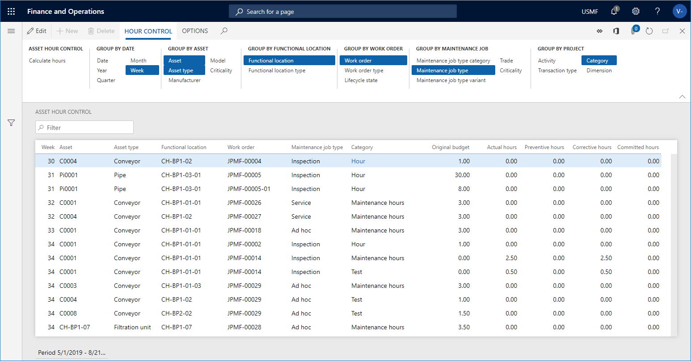

Work hour control
In Asset Management, you can calculate hours to get an overview of actual hours compared to budget hours on assets, functional locations, or work orders. Actual hours are based on posted transactions.
Work hour control for assets, functional locations, and work orders
The calculations made for assets, functional locations, and work orders are almost identical. Only difference is that for assets and functional locations, you can also include sub assets and sub locations in your calculation. The date is the transaction date when the registration was recorded.
Click Asset management > Inquiries > Assets > Asset hour control or Functional location hour control, or Asset management > Inquiries > Work orders > Work order hour control.
In the Asset hour control dialog, .
In the Asset hour control / Functional location hour control / Work order hour control dialog, select a period to be calculated in the From date and To date fields.
If required, select a Financial dimension set to be included in the calculation.
Select "Yes" on the Skip zero toggle button if you don't want to show results containing zero hours.
You can use the Level field to indicate how detailed you want the hour control lines to be regarding functional locations.
For example, if you insert the number "1" in the field, and you have a multi-level functional location hierarchy, all hour control lines for a functional location will be shown on the top level, and therefore the hours on a line may be added up from functional locations located at a lower level.
If you insert the number "0" in the Level field, you will see a detailed result showing all hour control lines on all the functional location levels to which they are related.
Select "Yes" on the Include sub assets toggle button to show costs related to sub assets as separate lines.
If you want to limit the search, you can select specific assets / functional locations / work orders on the Records to include FastTab.
Click OK to start the calculation.
On the Asset hour control page, click the Group by buttons to show the required detail level of the calculation. The selected Group by buttons are highlighted. Click on a button to activate or deactivate it.
Example
The screenshot below shows an example of an Asset hour control calculation.
- The Original budget field shows budget hours from the work order forecast.
- The Actual hours field shows posted hours on work orders.
- The Committed hours field shows total amount of hours that your company is committed to in relation to work orders.

Another way of making an hour calculation is to multi-select assets in All assets or Active assets. Then you click the Hour control button on the General FastTab. The selected assets are automatically inserted in the Asset field on the Records to include FastTab. Click OK in the Asset hour control dialog, and the calculation for the selected assets is shown. The same procedure can be done for functional locations in All functional locations or Active functional locations, and for work orders in All work orders or Active work orders.